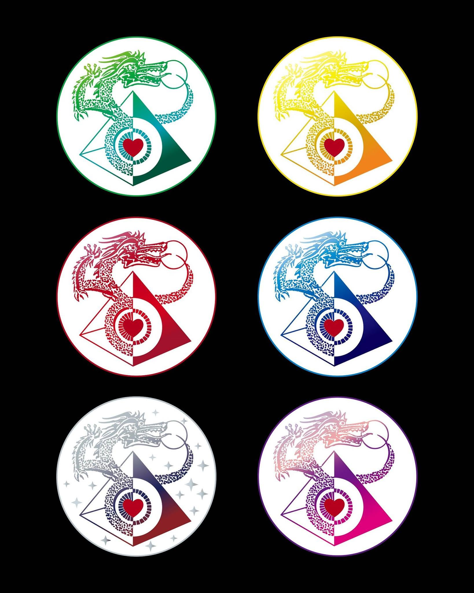

西藏脈動瑜伽
工作在神經系統的靜心療法。透過 New Mind 二十四器官、六色波與七步曲， 把負電印記轉化為生命本有的正電力量——在脈動裡，我們才是自己的老師。
🔴 🟢 🔵 🟡 ✨ 🟣
什麼是西藏脈動
西藏脈動瑜伽（Tibetan Pulsing Yoga）由 Dheeraj 創立，是一套以生物電能觀點理解身心的實修系統。 它把人體視為電氣循環的網絡：二十四個器官各自對應一段脊椎、一種意識屬性與一個色波； 疾病與痛苦被理解為「負電過度充斥的暫時狀態」，而脈動（Pumping）的工作就是刺穿壓抑、注入新鮮的生命力。
疾病＝能量阻塞＝神經系統中負電過度充斥的暫時狀態。接受了，就過去了。 ——西藏脈動療癒核心原則
脈動不是宗教、不設崇拜、不打誑語。它是靜心療法、是基礎功，支持身體的自癒本能； 行者以自己的內在為師，實修實練，讓功法落在生活裡。

探索本站
Dheeraj 的願景
「脈動能回到中國人的領域重新開花結果。」「找到兩百位佛，頻率就足以提昇整個人類的意識。」 ——Dheeraj，1998
常見問題
西藏脈動瑜伽是什麼？
由 Dheeraj 創立、工作在神經系統的靜心療法。它以生物電能觀點理解身心：二十四個器官各對應一段脊椎、一種意識屬性與一個色波，透過脈動（Pumping）把負電印記轉化為生命本有的正電力量。
西藏脈動是宗教嗎？
不是。脈動不設崇拜、不打誑語，是靜心療法與基礎功，支持身體的自癒本能；行者以自己的內在為師。
讀眼術是算命嗎？
不是。讀眼術透過虹膜判斷哪個器官有負電印記，用來確定該給予哪種 New Mind 工作——它照見能量的當下狀態，不看未來、不是靈通能力。
如何開始學習？
從脈動入門課開始，之後依色波推進（紅波→綠波→藍波→黃波…）。讀眼術須先學過脈動才適合學習。可先註冊成為學員。